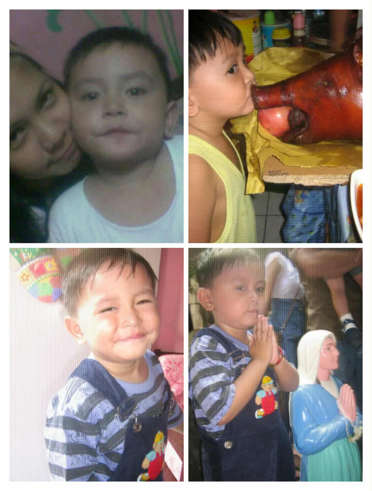
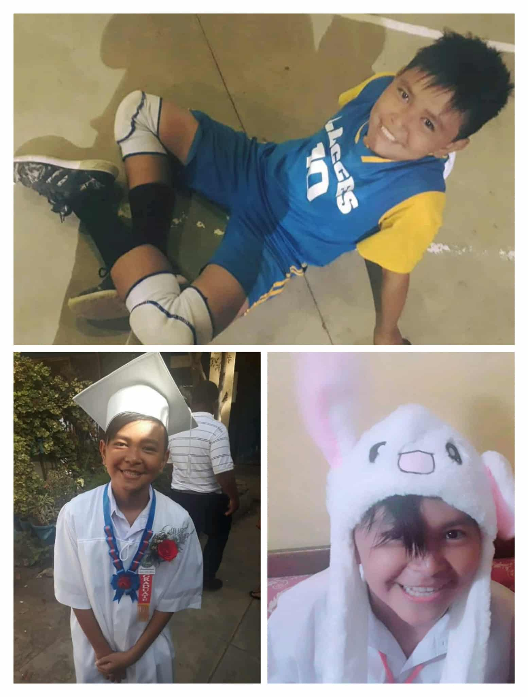
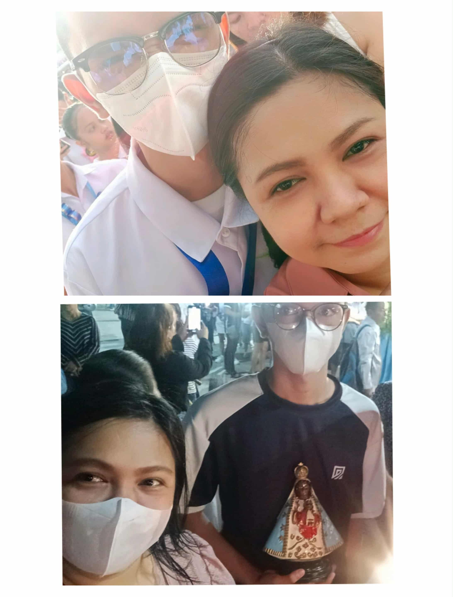
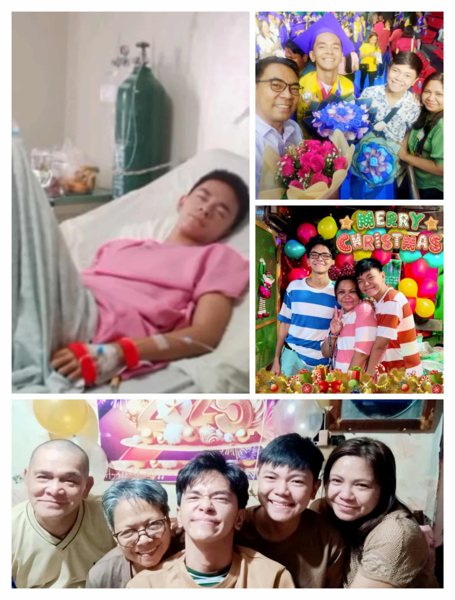

I am Orozco,Charles Lyanel P. and God called my name on April 17, 2007. At the early age my Mother had her choice about leaving my dad and go back to her parents, my lovely grandparents. Yes I know it is hard for us for living with no father in our side, seeing other family complete but our mother stand out as a "INATAY" for us yes Inatay INA at TATAY, and she also give us time to meet our dad every important event like Christmas, Birthdays and other events. Isaiah 43:1: "Fear not, for I have redeemed you; I have called you by name, you are mine".

When I was in Elementary it was hard at my part to understand lessons for my mom was having a hardtime to teach us due to her work and I am also not good listener hehe, Me and my Brother (Calix) went to LAPU-LAPU CITY CENTRAL ELEMENTARY SCHOOL and we have a 2 years gap. When our mom have an extra time it is hard for her to give us time because her time will be divided for me and my brother. At that time I was thinking that complete family is better than this "Mom can stay home while the dad work for us" and the immature me was really holding a grudge at my Dad for not treating my mom right that's why she had a choice to leave him. But I still manage to finish elementary with the help of my mother and grandparents and God got a better plans for us. "For I know the plans I have for you,” declares the Lord, “plans to prosper you and not to harm you, plans to give you hope and a future”.

When I was high school I went to Saint Alphonsus Catholic School, when I was grade 7 everything seems great until. I got a appendicitis that needs an operation. At that time having a immature mindset I was blaming God for every pain that I felt, I blame him for everthing that happened to me, I know it sounds so crazy blaming someone who saved me from death. After that I was getting worst I can't stop sinning and the fat me turn into what they call "Buknit" bukog og panit which means skin and bones. Covid-19 happened I don't know God at all I WAS BLIND. when I was grade 9 it was still covid days I transfered to Babag National High School due to family problems and at that time God introduce himself to me, finally I know who's the one who saved me I felt that I am a new human being that knew nothing about how the real world. He changed me, the Charles who curse everything is gone, the charles who blame God for everything that happened to him is changed. The old Charles was gone and I am shock that God can do that he can really do things that you thought you can't.Philippians 4:13, which states, "I can do all things through Christ who strengthens me".

When the Senior years started I was thinking at that time "it's time to prove myself that I can be someone" and God gave me a chance to prove it and he made me a mayor of our class "Mayor a higher than everyone else" but he got other plans for me I got large pneumothorax. I thought it was the end for me "haha another operation" yes I need operation once again, but now I know it happened for a reason and I know God is with me from the start. He was there when my mom decided to leave my dad, he was there when I holding a grudge against my father, he was there when I disrespect my grandparents, he was there when I talk bad against other people, he was there when I am tempted, He was always there just waiting for me to run back to him not only in bad days but also in my good days. After having that operation I was greatful that he is with me everytime. I am learning about myself better, I've also learned that I don't need to be better for I am always who he want me to be, I learned to forgive and I did forgive my father that long time holding a grudge against him is finally gone and I am thankful of that. He provide the things what I need. He is with me while I learned what are my hobbies, he is there to guide me and I surrender my life to him for the first place he is the one who gave it to me and NOW I SEE. Joshua 1:9 (NLT) “This is my command—be strong and courageous! Do not be afraid or discouraged. For the Lord your God is with you wherever you go.”

As I continue this journey, I am now continuing it with the one who saved me from sin. I may not great as others but now I know that I am a living testimony and I am enough. I am forever thankful for him for putting me where I am today, for my family, for forgiveness, for everything. If you're still lost always remember he is the sheperd who's willing to leave the 99 sheep to find the 1 who's missing - "Matthew 18:12-14". He is happy to have you back even though you turn yourback to him - "Luke 15:11- 32" and he is Jesus is God The Way, The Truth and The life no one comes to the father except through him. John 3:16 "For God so loved the world, that he gave his only begotten Son, that whosoever believeth in him should not perish, but have everlasting life".